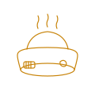
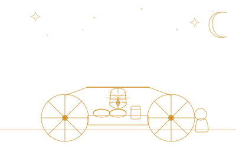
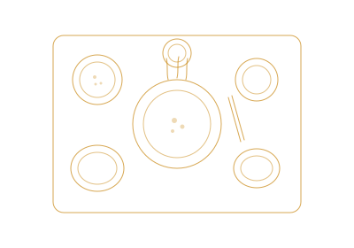
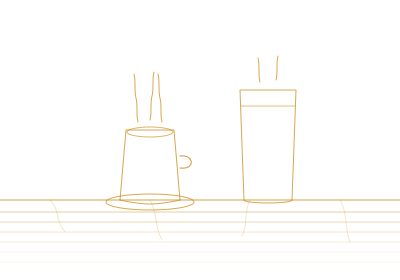
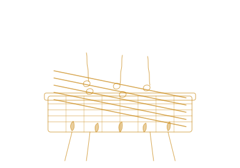
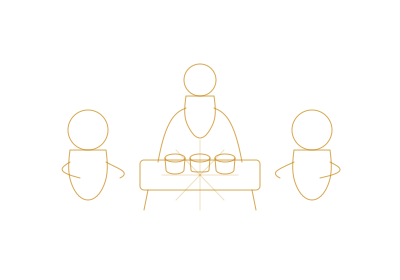
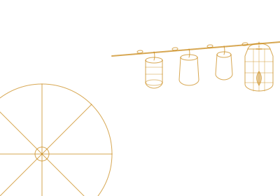

Titik Kumpul Orang Bahagia
Indonesia iku kudu akur, awakdewek iki sekabehane sedulur

Angkringan Sedulur bukan sekadar tempat makan. Di sini semua orang bisa duduk bareng, ngobrol santai, dan ngerasa kayak ketemu saudara sendiri — tanpa batas, tanpa jarak.
Dari nasi kucing hangat sampai sate yang baru dibakar, semua tersedia dengan harga yang bersahabat. Suasana malam, aroma bakaran, dan minuman hangat — kombinasi sempurna setelah hari yang panjang.
Indonesia iku kudu akur, awakdewek iki sekabehane sedulur
— Filosofi Angkringan Sedulur
Suasana Malam Angkringan Sedulur

Menu Unggulan

Minuman Pilihan

Proses Pembakaran

Kumpul Bareng Sedulur

Angkringan Kami